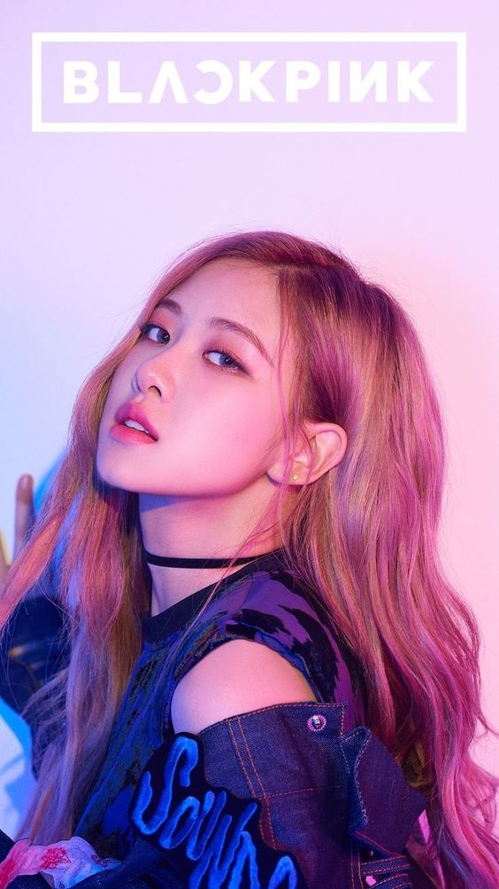
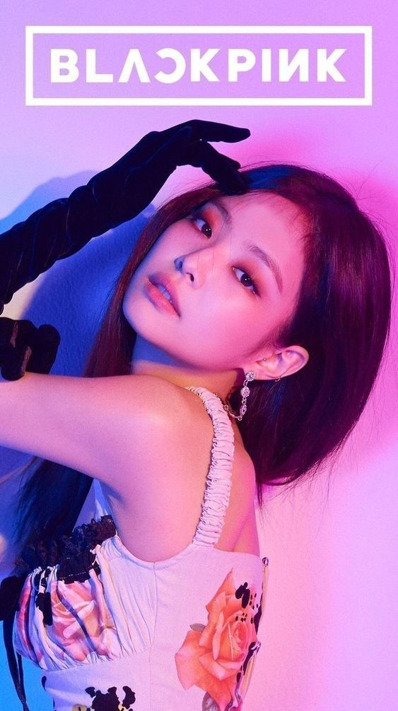
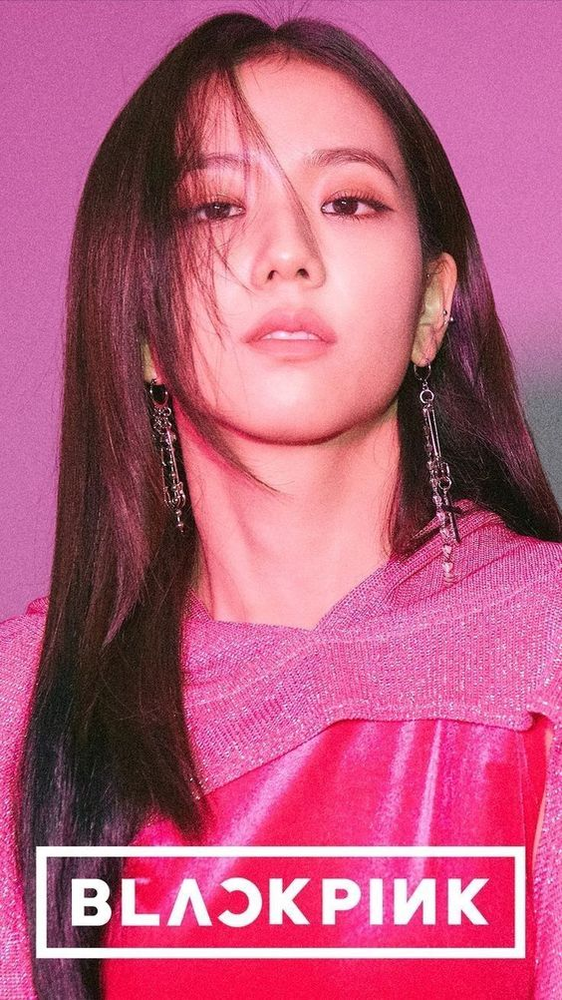
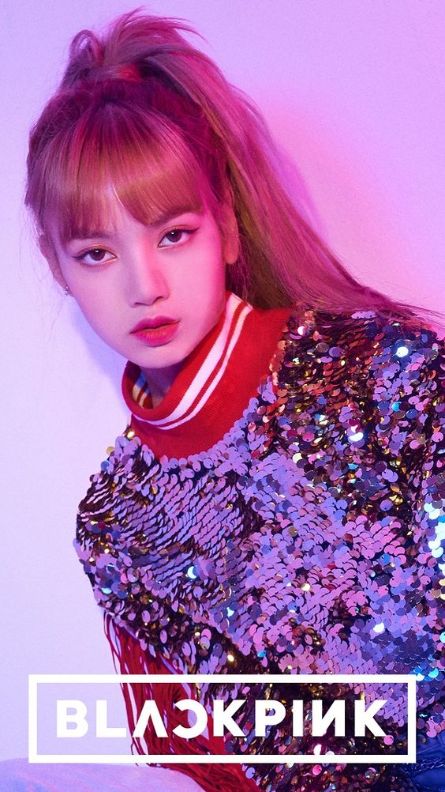

|  |  |  |  |
|
Stage Name : Rosé (로제) Birth Name : Park Chae Young (박채영) English Name: Roseanne Park Nicknames : Rose, Rosie, “Pasta” Position : Main Vocalist, Lead Dancer Birthday : February 11, 1997 Zodiac Sign : Aquarius Birthplace : Auckland, New Zealand Height : 168.7 cm (5’6”) Weight : 44 kg (97 lbs) Blood Type : B |
Stage Name: Jennie (제니) Birth Name: Kim Jennie (김제니) Nicknames: NiNi, Jendeukie Position: Main Rapper, Lead Vocalist Birthday: January 16, 1996 Zodiac Sign: Capricorn Birthplace: Anyang, South Korea Height: 163 cm (5’4″) Weight: 45 kg (99 lbs) Blood Type: B |
Stage Name: Jisoo (지수) Birth Name: Kim Ji Soo (김지수) Nicknames: Chi Choo, Jichu Position: Lead Vocalist, Visual Birthday: January 3, 1995 Zodiac Sign: Capricorn Birthplace: Gunpo, South Korea Height: 162 cm (5 ft 3¾ in) Weight: 44 kg (97 lbs) Blood Type: A |
Stage Name: Lisa (리사) Birth Name: Lalisa Manoban (ลลิสา มโนบาล) / Pranpriya Manoban (ปราณปริยา มโนบาล) Nicknames: Lili, Lalice, Laliz, Pokpak Position: Main Dancer, Lead Rapper, Sub Vocalist Birthday: March 27, 1997 Zodiac Sign: Aries Birthplace: Buriram, Thailand Height: 166.5 cm (5’5.6″) Weight: 44.7 kg (98.5 lbs) Blood Type: O |